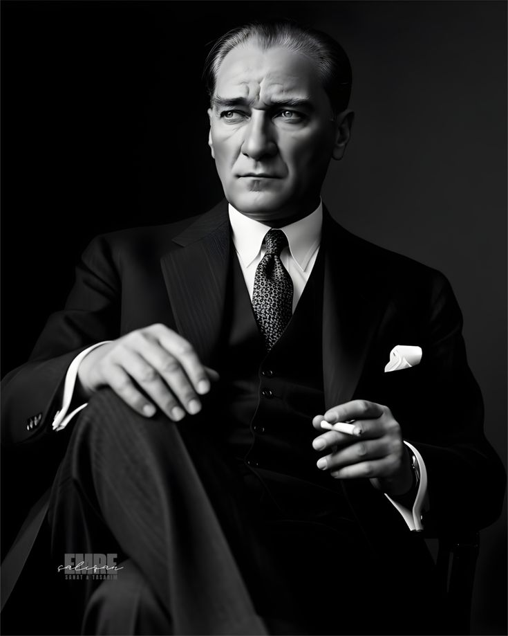
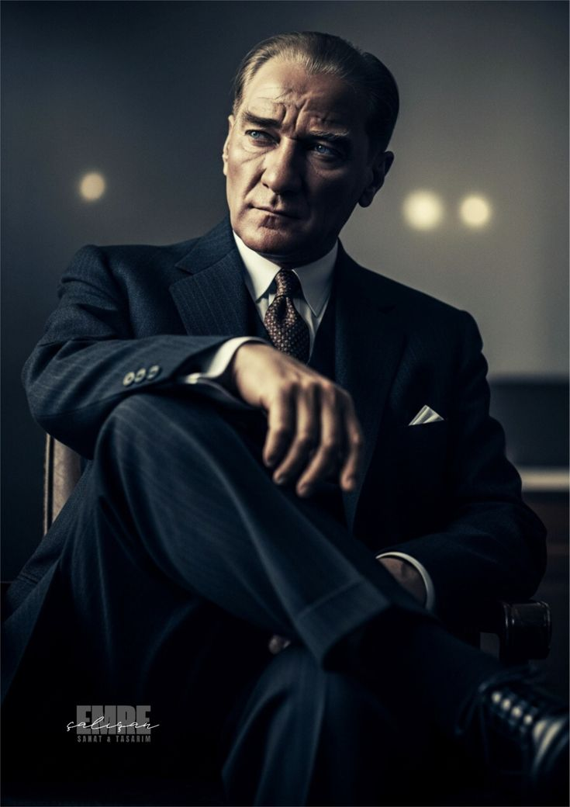
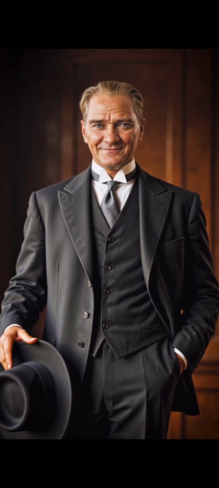
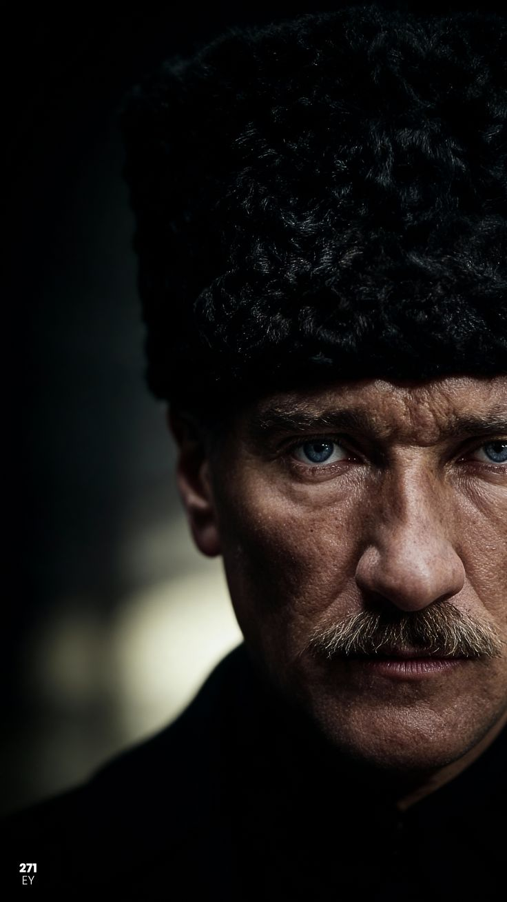
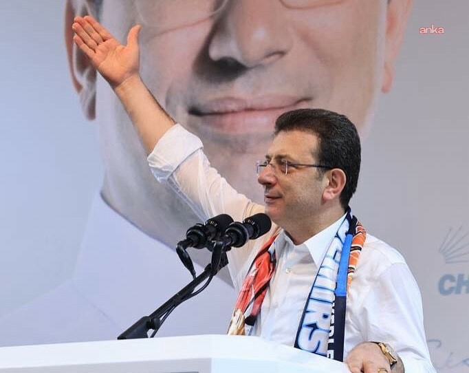
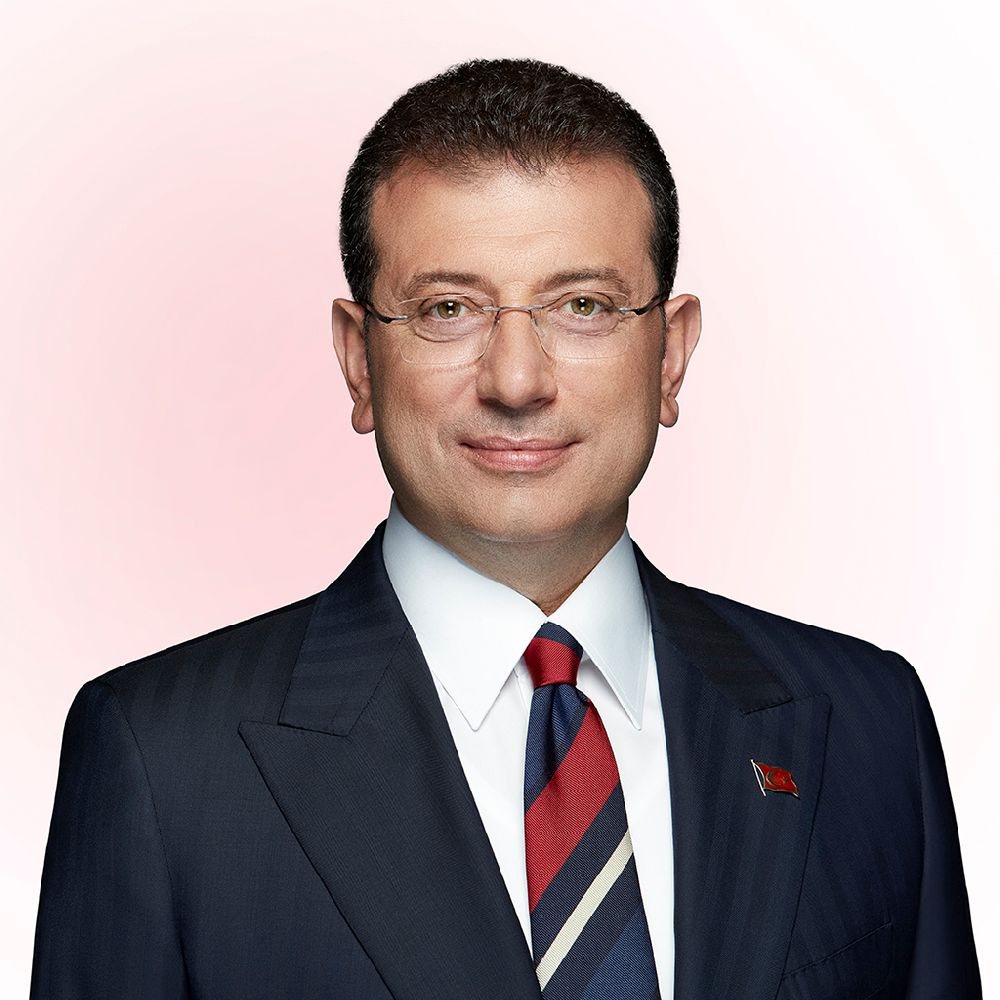
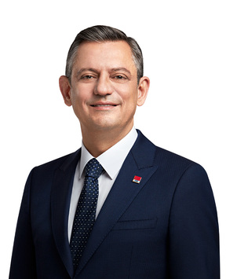
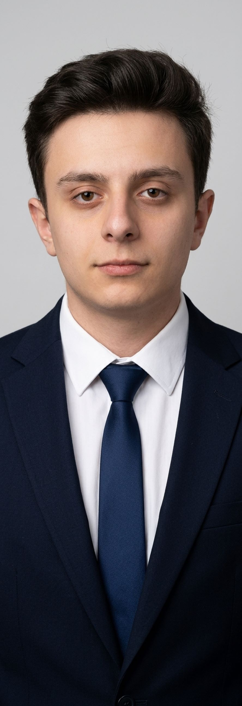

Ata'nın Işığı
EGEMENLİK KAYITSIZ ŞARTSIZ MİLLETİNDİR!








EGEMENLİK KAYITSIZ ŞARTSIZ MİLLETİNDİR!






Cumhuriyet Halk Partisi (CHP), Türkiye Cumhuriyeti’nin ilk ve en köklü siyasi partisidir. Parti, 9 Eylül 1923 tarihinde Mustafa Kemal Atatürk tarafından kurulmuştur. CHP’nin temeli, Kurtuluş Savaşı sürecinde oluşan ulusal direniş hareketine dayanır. Kurtuluş Savaşı ve CHP’nin Doğuşu Osmanlı Devleti’nin Birinci Dünya Savaşı sonrasında fiilen sona ermesiyle, Anadolu toprakları işgal altına girdi. Bu işgale karşı Türk halkının bağımsızlık mücadelesi Mustafa Kemal Paşa’nın 19 Mayıs 1919’da Samsun’a çıkışıyla başladı. Atatürk, Anadolu’nun dört bir yanında halkı örgütleyerek ulusal bir direniş hareketi başlattı. Bu dönemde kurulan Anadolu ve Rumeli Müdafaa-i Hukuk Cemiyeti, halkın iradesini temsil eden bir örgüt haline geldi. Bu örgüt, 23 Nisan 1920’de Türkiye Büyük Millet Meclisi’nin açılmasıyla siyasal bir yapıya dönüştü. Kurtuluş Savaşı, Türk milletinin kendi kaderini belirleme hakkını kazandığı bir dönüm noktası oldu. Zaferin ardından, Atatürk bağımsız bir devletin halk iradesine dayanması gerektiğini düşünüyordu. Bu fikir doğrultusunda, savaşın ardından yeni bir devlet düzenini kurmak ve reformları hayata geçirmek için bir siyasi örgütlenme ihtiyacı doğdu. Bu amaçla, 9 Eylül 1923’te Halk Fırkası kuruldu. Parti, 1935 yılında bugünkü adını alarak Cumhuriyet Halk Partisi (CHP) oldu. Cumhuriyeti Kuran Parti CHP, Türkiye Cumhuriyeti’ni kuran parti olarak tarihe geçmiştir. Cumhuriyet’in ilanı (29 Ekim 1923), laikliğin benimsenmesi, eğitim birliği, kadın haklarının tanınması, ekonomik kalkınma hamleleri gibi birçok köklü reform, CHP döneminde gerçekleştirilmiştir. Parti, bu dönemde yalnızca bir siyasi yapı değil, aynı zamanda devletin kurucu örgütü olarak görev yapmıştır. CHP’nin amblemi olan altı ok, hem partinin hem de Cumhuriyet’in temel ilkelerini simgeler: Cumhuriyetçilik: Egemenliğin millete ait olması, monarşinin reddi. Halkçılık: Herkesin eşit yurttaş olması, sınıf ayrımına karşı durmak. Laiklik: Devletin din kurallarından bağımsız olması. Devletçilik: Ekonomide devletin yönlendirici rol üstlenmesi. Devrimcilik: Yeniliklere ve gelişmeye açık olmak. Milliyetçilik: Irka değil, yurttaşlık bağına dayalı birlik anlayışı. Bu ilkeler, Türkiye Cumhuriyeti’nin temel yönetim anlayışını ve CHP’nin ideolojik çizgisini oluşturur. Atatürk’ün “İki Büyük Eserim” Sözü Mustafa Kemal Atatürk, yaşamının son yıllarında şöyle demiştir: “Benim iki büyük eserim vardır: Biri Türkiye Cumhuriyeti, diğeri Cumhuriyet Halk Partisi’dir.” Bu söz, CHP’nin Cumhuriyet ile birlikte kurulduğunu ve onun değerlerini temsil ettiğini anlatır. Atatürk’e göre Cumhuriyet, Türk milletinin özgürlüğünü; CHP ise o özgürlüğü koruyacak, geliştirecek ve yaşatacak kurumsal yapıyı temsil eder. “Baba Ocağı” Anlayışı Cumhuriyet Halk Partisi, kurucusu Atatürk’ün liderliği ve Cumhuriyet’in değerleriyle özdeşleştiği için, halk arasında “Baba Ocağı” olarak anılmaya başlanmıştır. Bu ifade, Türk milletinin Atatürk’ü “ulusal bir baba” figürü olarak görmesinden gelir. Atatürk, halkı koruyan, eğiten ve yol gösteren bir önder olarak algılanmıştır. CHP de, onun kurduğu kurum olarak, Cumhuriyet’in evi, halkın sığınacağı güvenli yer anlamında “baba ocağı” tanımıyla anılmıştır. Bu tanım, sadece duygusal bir benzetme değil, aynı zamanda tarihsel bir sürekliliği anlatır. CHP, kuruluşundan bu yana halkın haklarını savunan, Cumhuriyet değerlerini koruyan bir yapı olarak görülmüştür. Dolayısıyla “baba ocağı” ifadesi, CHP’nin Türkiye siyasi tarihinde devletin ve halkın ortak geçmişine dayanan bir simge haline gelmiştir. Günümüzde CHP’ye Yönelik Baskılar ve Siyasi Engellemeler Cumhuriyet Halk Partisi, tarih boyunca farklı dönemlerde baskılar, eleştiriler ve siyasi engellemelerle karşılaşmıştır. Tek parti döneminden çok partili hayata geçişte, askeri darbelerden olağanüstü dönemlere kadar, CHP zaman zaman haksız suçlamalara, kapatma girişimlerine ve baskıcı uygulamalara maruz kalmıştır. Günümüzde de CHP, bazı çevreler tarafından siyasi, idari ve medyatik baskılara uğramaktadır. Parti mensupları, özellikle yerel yönetimlerde görev yapan isimler, zaman zaman yargı, medya veya idari yollarla hedef alınmaktadır. Bu durum, Türkiye’de demokratik rekabetin sağlıklı bir şekilde işlemesi açısından tartışma konusu olmaktadır. CHP’ye yönelik mobbing, karalama kampanyaları, medya sansürleri gibi uygulamalar; partinin savunduğu değerlerin — yani laiklik, hukuk devleti, eşitlik ve özgürlük ilkelerinin — bazı dönemlerde politik baskı altında kaldığını göstermektedir. Bu tür durumlar, Cumhuriyet’in kuruluş felsefesini hatırlatan “baba ocağı” benzetmesinin yeniden önem kazanmasına neden olmuştur. CHP’nin Günümüzdeki Yeri Bugün CHP, Atatürk ilke ve devrimleri doğrultusunda hareket eden, demokratik düzen içinde siyasal mücadele yürüten bir partidir. Parti, kuruluşundan bugüne kadar geçen yüz yılı aşkın süreçte, Türkiye’nin siyasal, sosyal ve ekonomik gelişiminde sürekli bir rol oynamıştır. CHP, hem tarihsel kökeni hem de Cumhuriyet’in kurucu kimliği nedeniyle Türkiye siyasetinde özel bir konuma sahiptir.

Özgür Özel, 1974 yılında Manisa’da doğdu. İzmir Bornova Anadolu Lisesi Almanca Bölümü ve Manisa Lisesi’nde orta ve lise öğretimini, Ege Üniversitesi Eczacılık Fakültesi’nde lisans eğitimini tamamladı. 1999 yılında serbest eczacılığa başlayan Özel, Manisa Eczacı Odası’nda, 2001-2007 yılları arasında bir dönem Genel Sekreterlik ve iki dönem Oda Başkanlığı görevlerinde bulundu. Aynı yıllarda Manisa Akademik Odalar Birliği Dönem Sözcülüğü ve Başkanlığı görevlerini yürüttü. Bu dönemde Manisa Cumhuriyet Mitingi’nin düzenleyiciliği ve sözcülüğünü yaptı. Eczacı Özgür Özel, Oda Başkanlığı döneminde hayata geçirdiği sosyal ve çevre projeleri ile çeşitli ödüller aldı. Uluslararası Eczacılık Federasyonu, Avrupa Birliği Eczacılık Grubu, Avrupa Eczacılık Forumu gibi uluslararası örgütlere üyeliği ve Türkiye delegeliği bulunan Özel, 163 tane kongre ve konferansta yazılı ve sözlü bildiri, sunum ve panel yöneticiliği yapmıştır. 29 Mart 2009 yerel seçimlerinde Cumhuriyet Halk Partisi Manisa Belediye Başkan adayı olan Özgür Özel, 33. Olağan Kurultay’da ve 15. Olağanüstü Kurultay’da Cumhuriyet Halk Partisi Manisa İli Delegesi olarak görev yaptı. 2007 yılı ve 2009 yılı Aralık aylarında yapılan seçimlerde Türk Eczacıları Birliği Merkez Heyetine seçildi. Türk Eczacıları Birliği’nde bir dönem Saymanlık, iki dönem Genel Sekreterlik görevlerini yürüttü. 10.03.2011 tarihinde Milletvekili Adayı olmak üzere görevinden istifa etti. 12 Haziran 2011 tarihinde yapılan Milletvekili Genel Seçimlerinde Cumhuriyet Halk Partisi Manisa milletvekili olarak seçildi. 24., 25., 26., 27.,28. dönemlerde Manisa Milletvekili olarak seçildi. Sağlık, Aile, Çalışma Ve Sosyal İşler Komisyonu, SOMA Maden Kazasını Araştırma Komisyonu, CHP Ceza Evlerini İzleme Ve İnceleme Komisyonu ve CHP Üniversitelerin Ve Öğrencilerin Sorunlarını Araştırma Komisyonu’nda görev aldı. 18.CHP Olağanüstü Kurultayı’nda parti meclisi üyesi seçildi. Grup Başkanvekilliği görevini üstlenene kadar bu görevini sürdürdü. 25. 26. ve 27.dönemde CHP Grup Başkanvekili, 28.dönemde Grup Başkanı olarak görev yaptı. 38. CHP Olağan Kurultayı’nda Genel Başkan seçildi. Anne ve babası emekli öğretmen olan Özgür Özel, Ecz. Didem Özel ile evlidir ve İpek adında bir kızları vardır.

Yükleniyor...
MUSTAFA KEMAL ATATÜRKGENÇ BİZİMLE
Cumhuriyetin değerlerini savunan, Atatürk ilke ve inkılaplarını rehber edinen Seferihisar'ın lise gençliğiyiz. Geleceği inşa etmek için buradayız!
Egemenliğin tek kaynağının millet olduğu, liyakatin esas alındığı tam demokratik bir Türkiye idealini savunuyoruz.
Sınıf ve zümre ayrımı gözetmeksizin, ortak vatan idealinde birleşen her yurttaşı kucaklayan kapsayıcı bir aidiyet bağıdır.
Toplumsal adaletin sağlandığı, hiçbir gücün halkın üzerinde olmadığı, fırsat eşitliğinin her gencin hakkı olduğu bir düzen.
Ekonomik kalkınmanın halk yararına, stratejik kaynakların ise milletin geleceği için kamu gücüyle korunmasıdır.
Din ve devlet işlerinin ayrılmasıyla vicdan hürriyetini korumak, aklı ve bilimi devlet yönetiminde tek rehber kılmaktır.
Dogmalara hapsolmadan, çağın gereksinimlerine göre her zaman ileriye gitmek ve sürekli yenilenerek gelişmektir.
"Dünyada her şey kadının eseridir." — Mustafa Kemal Atatürk
Seferihisar, İzmir'in doğal güzellikleriyle öne çıkan, Türkiye'nin ilk "Sakin Şehir" (Cittaslow) unvanına sahip ilçesidir.
Doğası, tarihi ve genç nüfusuyla Cumhuriyet değerlerine bağlı bir yapıya sahiptir.
Halk-Lis Seferihisar ailemize katılmak isteyen arkadaşlarımız bizimle iletişime geçebilir.
Etkinlik ve buluşma duyurularımız yakında buradan paylaşılacaktır.
Cumhuriyet değerlerini savunan gençlerin sesi olmaya devam ediyoruz.
CHP Genel Başkanı

İl Başkanı

İlçe Başkanı